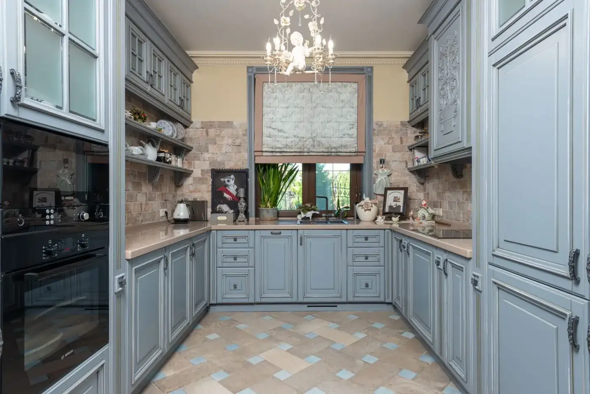
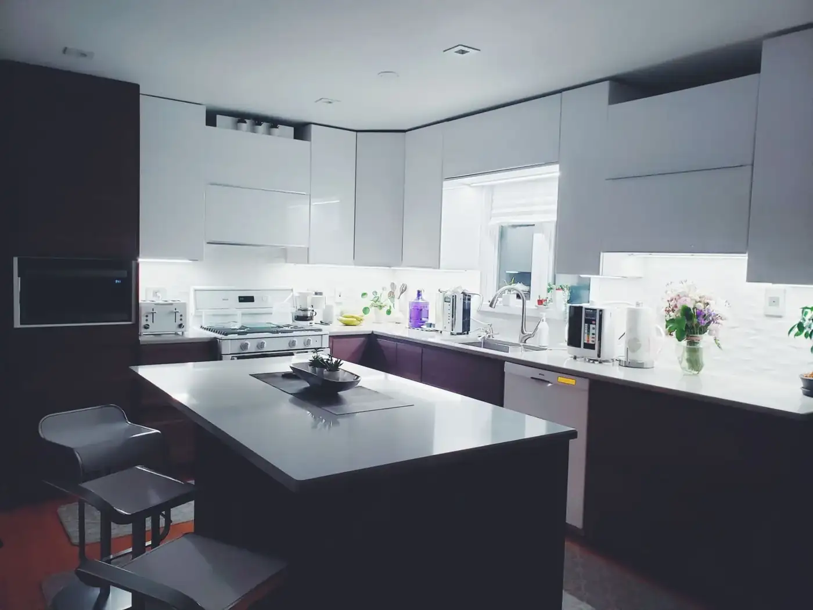
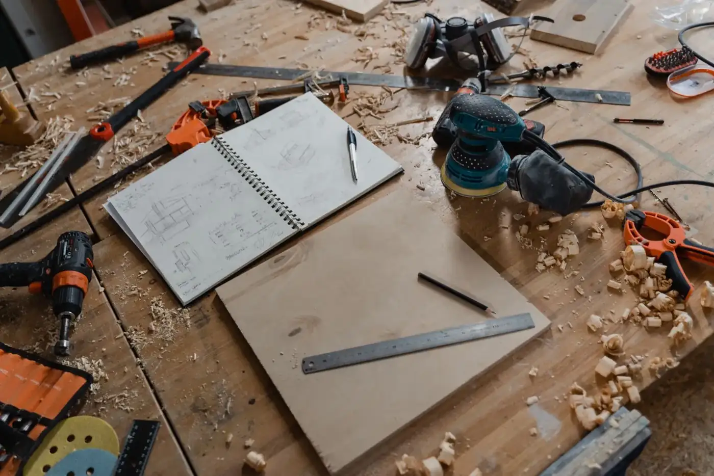
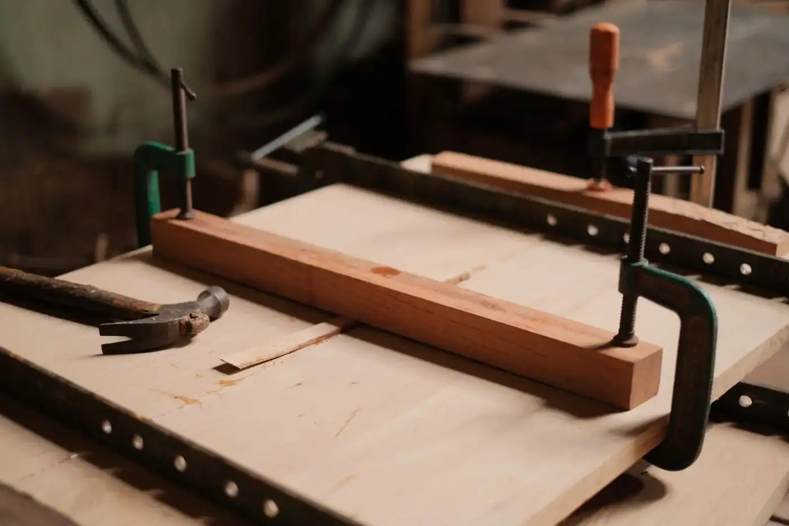

Custom kitchens
Kitchens tailored to your lifestyle, with quality materials.
Kersbrook Cabinet Makers · Kersbrook & Adelaide, SA
Custom kitchens, Bathroom vanities, Laundries — Kersbrook & Adelaide, SA.
What we do
Kitchens tailored to your lifestyle, with quality materials.
Custom-built vanities in a wide range of premium finishes.
Smart layouts and practical storage for laundry spaces.
Premium kitchen benchtops to finish your project.
About
Kersbrook Cabinet Makers is a family-owned business run by brothers Ben and Matt, with over 27 years of experience. They specialise in custom-designed kitchens, handcrafted bathroom vanities and functional laundry spaces, managing every aspect from custom cabinetry to premium benchtops.
Gallery
Sample imagery from Pexels standing in for Kersbrook Cabinet Makers projects — to be replaced with real project photos.






Reviews
Service area
Enquire
Tell us about your project and we’ll get back to you.
Email: kerscab@bigpond.com
What this preview improves